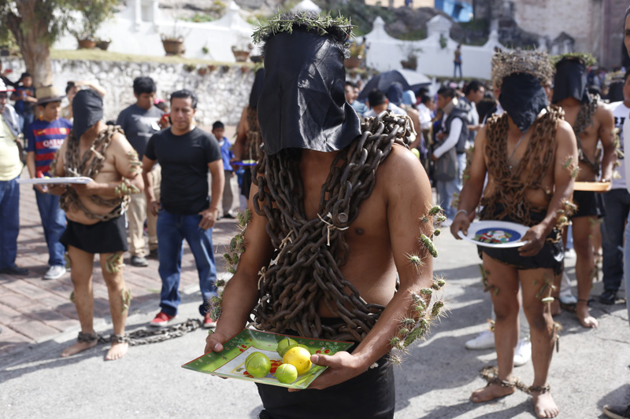
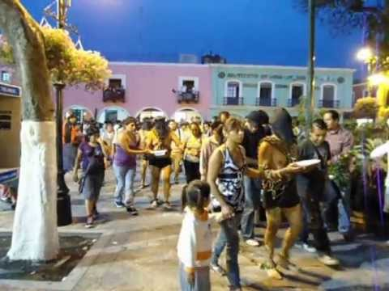
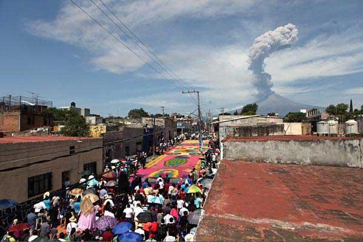
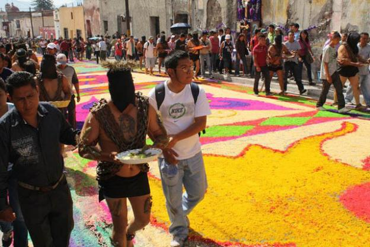

Una de las procesiones de Viernes Santo que más acapara la atención es la registrada en Atlixco con la presencia de los Engrillados, personas que encadenadas recorren las calles de referido municipio, las cuales portan coronas de espinas, así como púas o puntas que se colocan en distintas partes del cuerpo, principalmente en hombros y pies.
Cada Viernes Santo en Atlixco, docenas de hombres participan en la procesión de Los Engrillados, una tradición con más de 100 años.
Ya sea por manda o penitencia, los hombres encapuchados caminan al rededor de tres kilómetros, partiendo de la Iglesia de San Francisco, con espinas incrustadas al cuerpo y cargando cadenas de más de 50 kilogramos.
La gente del lugar adorna las calles con alfombras de aserrín y los fieles hacen la procesión con las imágenes de diferentes parroquias. Algunos de los participantes en esta procesión, llevan más de 50 años caminando cada Viernes Santo.
La creencia es que al caminar bajo estas condiciones, sus pecados serán perdonados, o bien, recibirán un milagro. También es una manera de agradecer a Jesucristo por los favores recibidos.